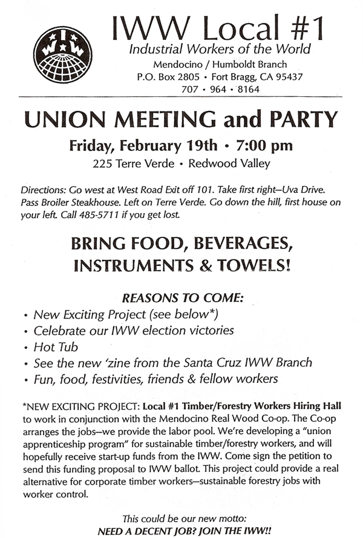

The New Wave of Environmental Loggers (Part 2)
The second part of an on air radio discussion with Judi Bari - Transcript of a KZYX FM radio program; also featured in the Anderson Valley Advertiser, September 30, 1992.
Judi Bari: This is Judi Bari. We're on the KZYX Environment Show. I'm here with Tony Pardini, Rod Balson, Ernie Pardini, and Mark Heimann talking about local logging issues. OK caller, go ahead.
Third Woman Caller: This is another Earth First!er who logged the Doug Fir on her own land.
Judi Bari: Yes. This is the one who clearcut, right?
Caller: Well, that was in '75. I left all of the redwood sprinkled all over. I didn't touch any of that. I have the same feelings as the previous caller. I was mightily impressed by the care with which my place was logged. In addition, the loggers took down eight dead Doug Fir trees they couldn't hall off to the mill because they were too long dead. They absorbed that expense.
I want to express my profound admiration for the courage of all of you in that studio. The courage of Judi to withstand all of the travail and still organize and still reach out. And the courage of you men to take her hand and say, "Yes, this is what I need to say." And you've risked everything to do it and you're going to come out in the end not as shorn lambs but Great Woolly Rams!
(Laughter in studio)
Ernie Pardini: Thank you very much. I'd like to say too that Judi and the environmentalists have fought our battle for us for several years now. All I can say is I'm ashamed it took so long. I think it's about time that we started carrying our own load.
Caller: Well, you can throw your shame away because you are carrying your own load. Thanks a lot, guys!
Judi Bari: Thanks. We have another caller.
Fourth Woman Caller (Naomi Wagner): Hello. I'd like to get onto the practical side here. I'm a little concerned here. How can you tell when you are logging that you are not only doing a clean job and a protective job, but also a sustainable job where there is going to be enough board feet growing back? The other thing I wanted ask... Some of us have had some ideas around the fact that there is a market for high quality, high value lumber products. One land owner can't always supply the demand from their land without depleting it. There's been some talk about some kind of cooperative marketing. I'm wondering if you could talk about that? ...Where do we take the wood and wood products from our land and sell them for the prices that they really deserve and maybe leave a few more trees standing in the process.
Judi Bari: I want to take those questions one at a time. First, how do you decide that what you are doing is sustainable logging? What kind of self-made logging rules do you use out on the job?
Ernie Pardini: To answer that first question... There haven't been enough studies done on a widespread basis with enough of a variety of climatic, soil conditions and environments to really get a solid fact base to say what is or isn't sustained yield. We were logging on a sustained yield basis all our lives by the seat of our pants until the corporations came in here. A good logger knows which trees he should take and which he shouldn't, the percentage of appropriate trees in that particular area. You can tell how fast they are growing by the size of their growth rings. The safest way, and the way we do it, is to underestimate it and take less than what you think would be sustained yield. That way you are always covered. When you are taking a smaller volume with a select cut the profit the land owner realizes isn't necessarily going to be as high. What we try to do is offer other alternatives. You mentioned a co-op. There is a co-op being organized that hopefully will take off and catch on that would market and manage lands and promote and encourage markets for more specialized wood products so that you can get a higher return off a smaller yield ... a smaller percentage. We do that a lot, such as where we do pepperwood burls where you're only taking 2 trees out of 400. another thing that we have to point out to landowners is, yes, maybe you're going to make only $100,000 instead of $150,000 now, but in 10 years you're going to have that same volume back again, if not more. The volume that was here before we logged will be back again in 10 years the way we are logging it, as opposed to a 50 year recovery or more like the corporations do.
Judi Bari: Caller, you're on the air.
Fifth Woman Caller (Antoinette): This is phoning in. I used to be married to a logger up in Humboldt County back in the 1950s. one of the companies that he had to work for--he was a logger, a faller--did the shear cut crap, you know. He'd take me back along the backroads and say, "They hide it back here. They don't want it where the tourists can see it." Then of course there were other places where he was allowed to do selective logging--"parking" as my son calls it. This is the first of your environmental programs true insight to the non-logger, non-forest living person as to what is really possible. I hope that you are making a tape of this. I hope that you make sure that an unexpurgated copy of this tape, including the telephone calls, gets into Al Gore's hands. I think that he and his friends could really stand some enlightening as to how "parking" is properly done and how logging can be done so that you can re-log within another few years.
Judi Bari: That's the irony. If you log correctly you can get more volume out while not destroying the land. I'm not really sure what you mean by "parking."
Caller: Is that like salvage logging, Ernie?
Ernie Pardini: No... well, it might be to some extent. But another thing that's real important to selective cutting is to cut the right trees. It's not enough to say, well, we're going to mark 30% or 40%. What L-P does is they will hire a crew of inexperienced younger men who are not necessarily even in the field of forestry, just laborers, to go out and mark one out of every four trees or one out of every three trees--even when they selectively log. So what you get is just randomly selected trees rather than the ones that need to be cut, instead of the ones that are damaged, diseased, scarred and so forth.
Caller: This is where your experienced forester earns his money. Going out and picking the trees that should be logged so that you do end up with an aesthetically beautiful piece of land that will produce more timber in another 10 or 15 years. That's why you have foresters.
Tony Pardini: Exactly. That's exactly what I was going to say. You have to hire a registered professional forester to do your plan. They know their business. They are going to mark the trees to cut that will release the growth of your other trees so that the stand will be thinned properly. Whereas I was logging on Congaree[1] property last year and, like Ernie said, a bunch of college kids went in and marked some of the trees... For instance, the redwood and Doug Fir were supposed to be marked. I came across a nutmeg that was marked. And a couple of clubs. There were no trees marked in the crowded club and there might be a tree, say, six feet from the club that had room to grow and it was marked. It just wasn't done properly. So that's where an RPF comes in handy. You have to have confidence in them. They do a good job.
Caller: This is why I called. I suddenly got excited when I realized there were some people talking about the old tried and true, really skilled methods of logging so that you didn't have to have a bad conscience. In fact the land looked better. You can have a clean conscience and the animals and the birds still had homes and the logs that you got out were beautiful logs. Like the girl who was able to build her house out of her own timber. But for heaven's sake save this tape and send a complete unexpurgated copy of it to Al Gore. I'm sure he'll know exactly what to do with it. There is nothing more stupid than the nonsense President Bush has been handed. I'm sure that Mr. Bush is perfectly sincere about his feelings, but he speaks from the gross ignorance of some of the big greedy companies. Cause they have handed him a picture which has nothing to do with proper successive logging. Therefore if Gore could get his hands on this, I'm sure he could put it in terms that the average voter could understand. Maybe the light will light. Just because you're a conservationist doesn't mean that you're anti-producing good wood for houses or whatever else. Oh, I might also add that, this was brought up to me by someone else, but of course back in our pioneer days, President Washington and all the others grew hemp for its fiber. It makes top quality paper as well as top quality canvas cloth. The Levi brothers came out and turned it into pants instead of the tents that they originally thought they were going to turn it into. if they want a reusable fiber for paper-making, they could do no better than to grow some seeds of what my friends and I always called "headache weeds."--no good for medicinal purposes or smoking, but it grows the long, straight, good fibers, just like the flax plant that grows in your garden. We could have a good renewable source for all the fiber for all the paper that we could possibly use in this country and we would never have to touch a tree again.
Ernie Pardini: If the corporations would let their baby trees grow up, they could have enough for fiber and lumber and everything else they can think of and still have some nice forests and trees, but they just won't let them get to the point where they can produce the kind of volume that they are capable of. One thing I'd like to point out to you listeners out there....It's scary enough that they are clearcutting. I don't know how many of you have heard... Harwood is proposing to the County what they call a "biomass plant" which, frighteningly enough, would entail the gathering of all the remaining vegetation on the forest floor--brush, limbs, whatever happens to be there, and hauling it and burning it in a burner to produce electricity to sell to electric companies...
Judi Bari: As if we need more electricity.
Ernie Pardini: Yeah. Now one thing any dumb logger knows, including myself, is that that stuff is what puts the soil back that will grow the next generation of trees. you can't take that stuff or you will have nothing left but a standing desert. I hope that all you out there listening will put pressure on the County to turn that down.
Judi Bari: That's a very important point. To feed a biomass plant, I think they said it needs 300 tons a day to break even and 600 tons a day to make the investment worth it. You just translate that every day, day in and day out, into what it takes to feed that and there really needs to be a big landmass to strip to feed a biomass plant. So when people say a biomass plant is alternative energy, we really better think twice. It's really just wasting something that we all need.
Rod was telling me one of his experiences that I would like to have him relate on the air. Along with the trees that are gone, the fish, the earth's ability to support us...The last caller that talked about turning to the old methods and the old knowledge... That's really important. People used to know how to live off the land. Now we are not only losing the knowledge, but the land is losing its ability to support us. Rod, do you want to tell us your experiences fishing on Wolfe Creek (in the Sinkyone, north of Fort Bragg)?
Rod Balson: I used to fish with Bob Brendlen back in the mid to late 70s. I was just a teenager still in high school. G.P. started locking us out of the area, but we had the combination or we changed the lock... I guess it took a long time for them to get the wheels rolling. We came back.. I think we had a yarder in there in the fall... I don't remember what year it was--but we came back the next season to fish... (We used to sell our fish to Marine World and Steinhart's aquarium. They would only eat our fish. If they didn't have our fish and they ran out, there would be a big panic down there because they couldn't eat anyone else's fish.) Anyway, we came back and it was a moonscape. There used to be a feeling when you dropped down into Wolfe Creek... I don't know how to explain it, it was just one of those places where you just got that feeling that this was the way it should all be. It'll never happen again though. There used to be salmon and steelhead runs up there. I've been back there twice in the winter. There is, like... nothing. it used to be like you'd see in Alaska, in the commercial, just going up Wolfe Creek through the alders and all that stuff. It's not there anymore.
Judi Bari: I think people, especially those who have lived here all their lives have really seen a change just in what's out there, what's available. Well, fishing was a way to put a lot of food on the table in lean times. I think what they're taking... It's real criminal what these corporations are doing.
We didn't really finish answering Naomi's questions as we got into other callers. The first was how do you really know that what you're doing is sustainable? Jerry Philbrick told me something that I'd like to quote back on this. I know a lot of environmentalists out there think of Jerry Philbrick as much of an environmental logger. I think Jerry may come around one of these days but, you know, he works for G.P.; he does what G.P. tells him. But he has a lot of ideas and his family has been here for five generations. He said, "Well, yeah, you can either go in there and you can measure the basal area and then you can keep records and come back at certain year intervals and re measure it and determine what the growth is... Or you can eyeball it." And I think there is something to that I don't want to dismiss. I think that when Tony and Ernie say, "Well we can just estimate it," I think that environmentalists tend to be somewhat suspicious. I think that loggers tend to estimate toward the making-money end. I don't know if that means you or not. But I think there is this kind of thing where we don't really trust our own knowledge. I know that when Rudy Becking, who is this RPF who went out in the forest with Ernie and some others... Ernie do you want to tell that story about when he wanted to figure out the height of the tree?
Ernie Pardini: It was toward the end of the day. we were doing an inventory on a test site at Jackson State Forest. I don't mean a nuclear test site--I mean a sustained yield study plot that Rudy has been working on...
Judi Bari: No, L-P lands are the nuclear test sites.
Ernie Pardini: Yeah. Well, there are some like that on Jackson State Forest too. Anyway, Rudy is this forester who has been testing sustained yield methods at this plot in Jackson State Forest since 1963. At the end of the day they decided that they would measure the height of this tree that was at the top of this ridge and they had the equipment to accurately measure it, but it was a procedure that took about 15 minutes. So in lieu of waiting for them to get all their gear lined up and aimed correctly to do the measurement, I walked up to the base of the tree and looked up and down the tree and I said, "It's got two forties and a twelve in it... 92 feet." Rudy laughed at me and said, "Well, we need to be accurate on this one," I said OK. They spent another 10 minutes figuring and writing and calculating and when they were finished they said it was 91 feet. So one of us missed it by a foot and I believe it was them, but I'm not sure.
Judi Bari: All right (laughs). I wanted to relate that story just to give some respect to the experience that people who work in the woods have. We need to acknowledge that the loggers are the ones who have this knowledge and as long as they are not being held captive by the corporations, making them cut themselves out of jobs, I think we can get somewhere.
We have another caller. You're on the air.
Sixth Woman Caller: Yes. I was just curious. I'd like to ask the loggers there about that big forest north of Fort Bragg that that guy who used to be head of the union, Don whatever-his-name-is , wants to get involved in. The Indians want to manage it. I was just wondering how these loggers feel about that? I was hoping that the Indians would have chance to do it.[2]
Judi Bari: I'll describe the background a little bit so that listeners know what you're talking about... What we're talking about here is the Sinkyone Wilderness State Park. The central clump of it is the Sally Bell Grove, an old growth grove that is also a sacred place to the native people. Sally Bell was the last surviving member of her tribe after a massacre in 1867. So that's the only good place left in Sinkyone Wilderness State Park. The rest of it is logged over land that is now eligible for state grants for restoration. There are competing groups that want these grants. One of them that's been involved so far is the Sinkyone Wilderness Tribal Council, I think that's the correct name, it is a group of native people who are trying to use native methods to restore the land. Native people--people think they didn't touch the land--but they managed the land also. they managed it for forests, but they managed it for humans to live too. The women did the burning to keep the fields open for a variety of game and wildlife. So what the Indians are trying to do is to use the native methods of land management to bring back the historic forests. They are one group trying for the grants. The other group is headed by Don Nelson, the ex-president of the supine millworkers' union that just lies down for the corporations at Georgia-Pacific. Don Nelson was booted out by his own union after not defending them when they had PCB spilled on them, accepting a 25% wage cut, allowing the loggers to be taken out of the union and various other things. You can tell I'm unbiased on this one. (Laughs) he's now resurfaced as the head of this "Land Trust." They say that they want to get the Sinkyone land so that they can do what they call a "Conservation Trust" and use logging methods on what are already logged over lands and try to produce value off of it.
Now that I've given you a very unbiased description of the two groups (laughs), what do you think of these approaches?
Ernie Pardini: I'll tell you right now, if it ever comes to a stand off, I'm going to be up there with a feather in my hat and standing on the ground with the Indians. Putting this land in Don Nelson's hands will cause it to end up like Harwood's biomass plant source stripped lands--every bush and shrub gone.
Judi Bari: Does anybody else want to comment on that?
Mark Heimann: I just want to say that I love how some of these groups call themselves the "conservationists" or the "conservatives." They make Earth First! out to be the radicals. It was always kind of confusing to me. I thought when you saved for the future, that was a very conservative way of going about things. And when you take it all now, I think that's a very radical position. I think for a long time we've been fed a big line. I'm real proud to be associated with Ernie and Tony and proud to be here while they're coming out and saying "Bullshit" to it.
Tony Pardini: Mark, thanks. I had the same thought in mind. I'd like to thank you and Judi. You opened my eyes. You made me see what was going on. I have to tell you: I think that my influence with some of the young people and the young loggers around here is doing some good. But if it isn't, if for some reason it's not, I still feel good because I'm going to do a good job. I feel good because I'm going to do a good job. I feel good about what I'm doing. I've got that logger pride back. So...
Judi Bari: Yeah. I'm proud to be associated with you too. We only have a couple more minutes.
We've been talking about forming a co-op among landowners that are interested in sustainable forestry, timber workers logging in a way they can be proud of, manufacturers and distributors getting together and taking the economy of this County from its absentee owners. We're talking about having a founding meeting and trying to set this up as a legal entity...
Back once more to what is sustainable forestry... Naomi and I as IPFs--Intuitive Professional foresters--once came up with a very simplified version of what we thought the Forestry Advisory Rules should be. it had to fit on one side of a page, double spaced, no more than 10 items. I'd like to list these and see if you loggers could go with it...
(1) NO OLD GROWTH CUTTING -- not one more tree. We know that there may be individual exceptions, but basically we've taken so much old growth that there's not much left and we need to preserve it.
(2) NO CLEARCUTTING -- No minimum acreage. No shelterwood removal. Selection cutting only.
(3) INVENTORY MUST INCREASE 10% PER DECADE -- until forests are restored to their maximum productivity at which point you could then go to sustained yield.
(4) NO HIGH GRADING, NO MONOCULTURE -- Forest management must be for all ages and all species.
(5) PROTECT WILDLIFE MIGRATION CORRIDORS -- as defined by Map Rap.
(6) DAMAGED WATERSHEDS MUST BE IDENTIFIED AND RESTORED -- restoration jobs at comparable wages to logging jobs, and financed by the companies that did the damage. Priority hiring for displaced timber workers. We want MAXXAM, L-P and G-P to pay.
(7) NO CONVERSION OF TIMBERLANDS -- No more vineyards or subdivisions. Timberlands must stay timberlands.
(8) HIGHEST POSSIBLE USE OF THE RESOURCE -- No chipping baby trees for pulp, fiber or fuel. High quality saw wood products only.
(9) SECONDARY JOBS STAY IN THE AREA -- All value-added processes, such as milling and planing, must be done on site or close by. No Mexico mills or Siberia operations at our expense.
(10) RESTITUTION -- No corporate ownership. Corporate executives will be put to work cleaning up toxic spills and hot spots at the abandoned mill sites that they have left in their wake.
I know that's kind of a lot to say. Is that anything like you're thinking? Do you think that you could go along with that kind of a program?
Ernie Pardini: A lot of it, yeah. I don't see a problem with most of what you said there. One thing... You say no old growth and I go along with that in areas where there are few exceptions. There are some old ranches that have been logging their old growth on a very, very, very selective basis for years and it's necessary. you have to manage an old growth forest just as you do a second growth forest. There comes a time when they can be overcrowded. The older ancient trees are going to start to deteriorate from the root system up in an area where they might be crowded anyway. Removing a tree here and there...you'll never know that it was ever logged. I can show you examples of this. One example that's been managed very well... there's an area that was logged two years ago and you'd never guess that it was logged only two years ago--That's the Maillard Ranch. It's very selective cutting, only in areas where it's going to release the growth of the residual old growth that's there or the smaller ones...
Judi Bari: We'll have to have you back to talk about this some more. I'll have to stop you there, were out of time.
We failed at local rules, we failed at state rules, we failed at national rules... We're going to take our woods back from the bottom up. Let's sit down loggers and environmentalists. WE'LL write the rules. If landowners won't log by anything but the people's rules, then the people will take this forest back.
[1] The Congaree River Limited Partnership--owned primarily by Francis Biedlen, a Chicago-based corporation. -- Note by Bruce Anderson.
[2] The caller is referring to Don Nelson, union representative for the International Woodworkers of America, Local #3-469 (AFL-CIO) in Mendocino County.